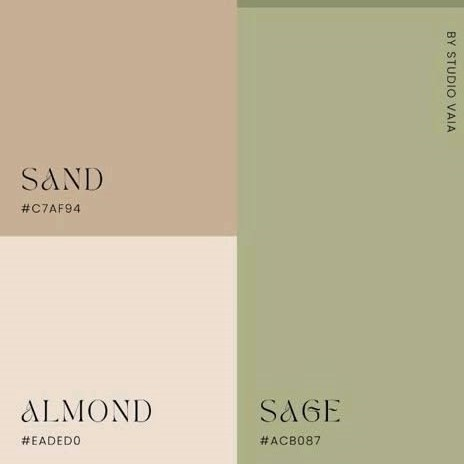
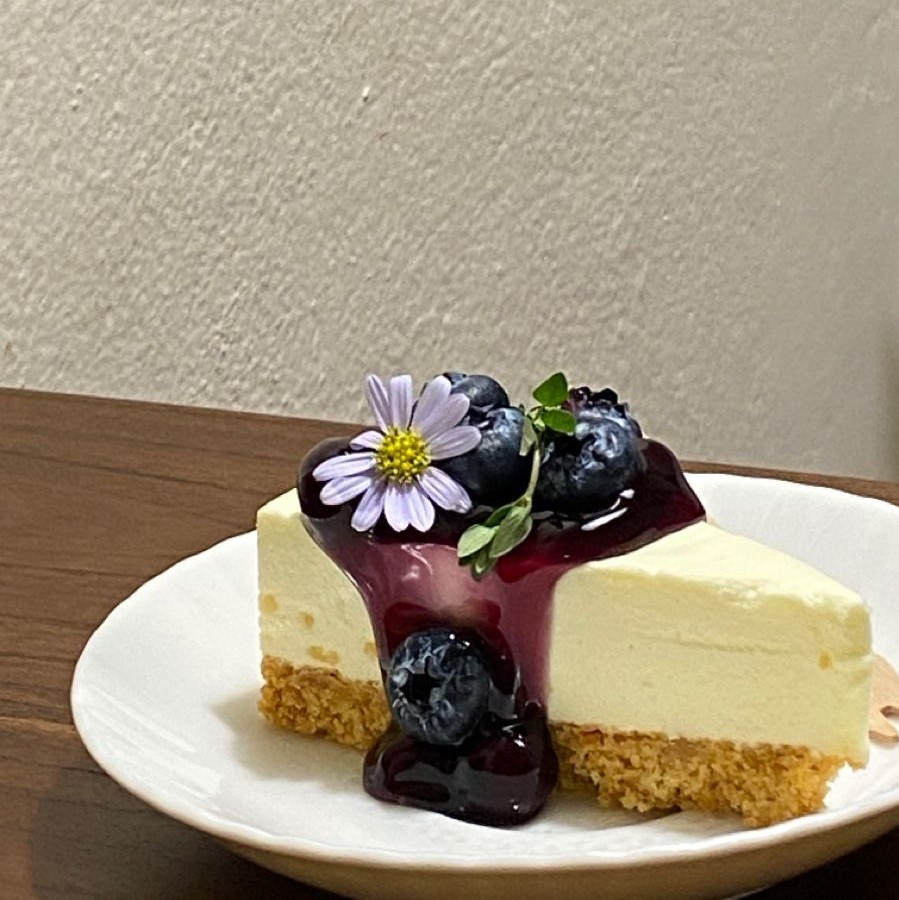
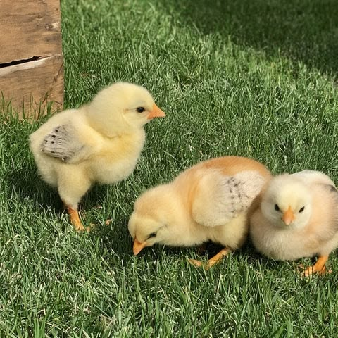

colors
Pastel & earthy
Low-key obsessed with warm tones, soft palettes, and anything easy on the eyes.
Simple things, pretty things, good food, good music, and little things that somehow become memorable. This is a little space about Luca and the things that make her, her.
Luca has an eye for the little things that make life feel special. She appreciates clean aesthetics, soft tones, good food, and music that just hits right. While she usually keeps her cool, she’s surprisingly passionate when it comes to the things she truly cares about.

Low-key obsessed with warm tones, soft palettes, and anything easy on the eyes.

If the food’s great, the portions are fair, and it doesn't break the bank, sign her up.

Luca actually used to have three colorful little chickens. Safe to say, it was cute while it lasted.
One of those people who somehow carries good looks as a whole personality.
Her favorite hues, the tracks on repeat, the little things she adores, the minds she admires, and every small detail worth holding onto.